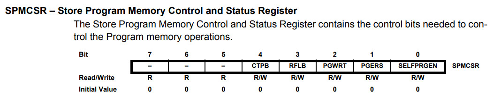
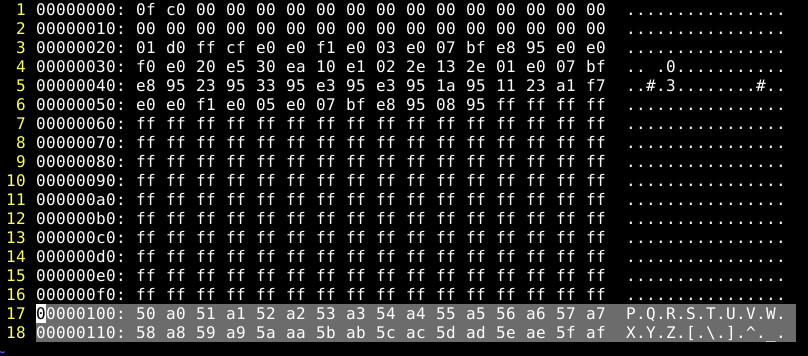

參考資訊：
https://www.microchip.com/en-us/product/attiny13#Documentation
https://www.avrfreaks.net/forum/self-programming-tiny13-solved
https://nerdathome.blogspot.com/2008/04/avr-as-usage-tutorial.html
Program Flash的操作都是以Page為單位，一個Page是16 Words(32 Bytes)，Z(r32:r30)暫存器是位址，r1:r0則是Word的資料，唯一要注意的地方是，填寫的位址是0x00開始

.equ SPMCSR, 0x37
.org 0x0000
rjmp main
.org 0x0020
main:
rcall program_flash
loop:
rjmp loop
program_flash:
; erase
ldi r30, 0x00
ldi r31, 0x01
ldi r16, 0x03
out SPMCSR, r16
spm
; fill (0x100: 0x50, 0xa0, 0x5a, 0xa1...)
ldi r30, 0x00
ldi r31, 0x00
ldi r18, 0x50
ldi r19, 0xa0
ldi r17, 16
0:
mov r0, r18
mov r1, r19
ldi r16, 0x01
out SPMCSR, r16
spm
inc r18
inc r19
inc r30
inc r30
dec r17
tst r17
brne 0b
; write
ldi r30, 0x00
ldi r31, 0x01
ldi r16, 0x05
out SPMCSR, r16
spm
ret
編譯和燒錄
$ avr-as -mmcu=attiny13 -o main.o main.s $ avr-ld -o main.elf main.o $ avr-objcopy --output-target=ihex main.elf main.ihex $ sudo avrdude -c usbasp -p t13 -B 1024 -U flash:w:main.ihex:i
接著讀取Flash
$ sudo avrdude -c usbasp -p t13 -B 1024 -U flash:r:flash.bin:r
完成
